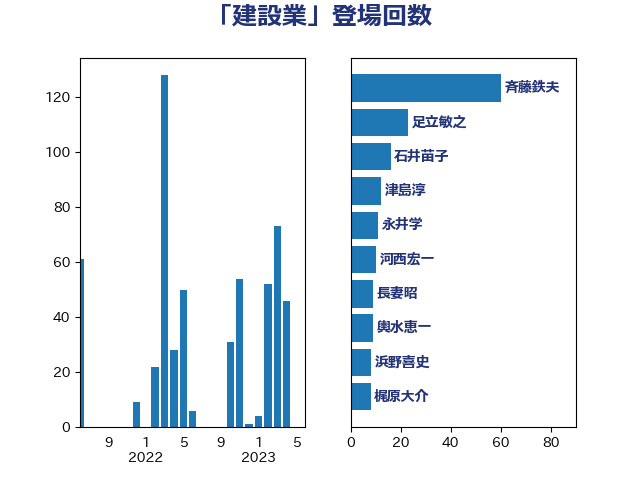

単語「建設業」

| 斉藤鉄夫 | 公明党 | 60 回 |
| 足立敏之 | 自由民主党 | 23 回 |
| 石井苗子 | 日本維新の会 | 16 回 |
| 津島淳 | 自由民主党 | 12 回 |
| 永井学 | 自由民主党 | 11 回 |
| 河西宏一 | 公明党 | 10 回 |
| 長妻昭 | 立憲民主党 | 9 回 |
| 輿水恵一 | 公明党 | 9 回 |
| 浜野喜史 | 国民民主党 | 8 回 |
| 梶原大介 | 自由民主党 | 8 回 |
| 石井浩郎 | 自由民主党 | 7 回 |
| 岸田文雄 | 自由民主党 | 7 回 |
| 田村憲久 | 自由民主党 | 6 回 |
| 岩本剛人 | 自由民主党 | 6 回 |
| 山本佐知子 | 自由民主党 | 6 回 |
| 神津たけし | 立憲民主党 | 5 回 |
| 田村貴昭 | 日本共産党 | 5 回 |
| 田所嘉徳 | 自由民主党 | 5 回 |
| 日下正喜 | 公明党 | 5 回 |
| 城井崇 | 立憲民主党 | 5 回 |
| 道下大樹 | 立憲民主党 | 4 回 |
| 笠井亮 | 日本共産党 | 4 回 |
| 矢倉克夫 | 公明党 | 4 回 |
| 小林一大 | 自由民主党 | 4 回 |
| 仁木博文 | 無所属 | 4 回 |
| 上野賢一郎 | 自由民主党 | 4 回 |
| 高見康裕 | 自由民主党 | 3 回 |
| 野間健 | 立憲民主党 | 3 回 |
| 赤嶺政賢 | 日本共産党 | 3 回 |
| 谷田川元 | 立憲民主党 | 3 回 |
| 芳賀道也 | 国民民主党 | 3 回 |
| 松山政司 | 自由民主党 | 3 回 |
| 小森卓郎 | 自由民主党 | 3 回 |
| 小宮山泰子 | 立憲民主党 | 3 回 |
| 宮本徹 | 日本共産党 | 3 回 |
| 室井邦彦 | 日本維新の会 | 3 回 |
| 伊藤渉 | 公明党 | 3 回 |
| 中川郁子 | 自由民主党 | 3 回 |
| たがや亮 | れいわ新選組 | 3 回 |
| 高良鉄美 | 無所属 | 2 回 |
| 高橋光男 | 公明党 | 2 回 |
| 青木愛 | 立憲民主党 | 2 回 |
| 鈴木憲和 | 自由民主党 | 2 回 |
| 足立康史 | 日本維新の会 | 2 回 |
| 石原宏高 | 自由民主党 | 2 回 |
| 田名部匡代 | 立憲民主党 | 2 回 |
| 清水真人 | 自由民主党 | 2 回 |
| 江島潔 | 自由民主党 | 2 回 |
| 東徹 | 日本維新の会 | 2 回 |
| 岩渕友 | 日本共産党 | 2 回 |
| 山東昭子 | 自由民主党 | 2 回 |
| 大串正樹 | 自由民主党 | 2 回 |
| 加藤勝信 | 自由民主党 | 2 回 |
| 高橋千鶴子 | 日本共産党 | 1 回 |
| 階猛 | 立憲民主党 | 1 回 |
| 長浜博行 | 無所属 | 1 回 |
| 長友慎治 | 国民民主党 | 1 回 |
| 鈴木俊一 | 自由民主党 | 1 回 |
| 越智俊之 | 自由民主党 | 1 回 |
| 赤木正幸 | 日本維新の会 | 1 回 |
| 角田秀穂 | 公明党 | 1 回 |
| 落合貴之 | 立憲民主党 | 1 回 |
| 緑川貴士 | 立憲民主党 | 1 回 |
| 紙智子 | 日本共産党 | 1 回 |
| 米山隆一 | 立憲民主党 | 1 回 |
| 窪田哲也 | 公明党 | 1 回 |
| 稲富修二 | 立憲民主党 | 1 回 |
| 福島伸享 | 無所属 | 1 回 |
| 礒崎哲史 | 国民民主党 | 1 回 |
| 石田昌宏 | 自由民主党 | 1 回 |
| 漆間譲司 | 日本維新の会 | 1 回 |
| 源馬謙太郎 | 立憲民主党 | 1 回 |
| 渡辺猛之 | 自由民主党 | 1 回 |
| 浅野哲 | 国民民主党 | 1 回 |
| 櫻田義孝 | 自由民主党 | 1 回 |
| 櫻井充 | 自由民主党 | 1 回 |
| 末松義規 | 立憲民主党 | 1 回 |
| 末松信介 | 自由民主党 | 1 回 |
| 早坂敦 | 日本維新の会 | 1 回 |
| 新垣邦男 | 立憲民主党 | 1 回 |
| 後藤茂之 | 自由民主党 | 1 回 |
| 平木大作 | 公明党 | 1 回 |
| 川崎ひでと | 自由民主党 | 1 回 |
| 岡本あき子 | 立憲民主党 | 1 回 |
| 山本香苗 | 公明党 | 1 回 |
| 山本剛正 | 日本維新の会 | 1 回 |
| 山崎正恭 | 公明党 | 1 回 |
| 小寺裕雄 | 自由民主党 | 1 回 |
| 大岡敏孝 | 自由民主党 | 1 回 |
| 塩田博昭 | 公明党 | 1 回 |
| 吉良州司 | 無所属 | 1 回 |
| 吉田宣弘 | 公明党 | 1 回 |
| 吉川沙織 | 立憲民主党 | 1 回 |
| 古川元久 | 国民民主党 | 1 回 |
| 加藤明良 | 自由民主党 | 1 回 |
| 加田裕之 | 自由民主党 | 1 回 |
| 伊藤達也 | 自由民主党 | 1 回 |
| 井林辰憲 | 自由民主党 | 1 回 |
| 井上哲士 | 日本共産党 | 1 回 |
| 中野英幸 | 自由民主党 | 1 回 |
| 上田英俊 | 自由民主党 | 1 回 |
| 上田勇 | 公明党 | 1 回 |
| 三浦信祐 | 公明党 | 1 回 |
| ながえ孝子 | 無所属 | 1 回 |
| おおつき紅葉 | 立憲民主党 | 1 回 |